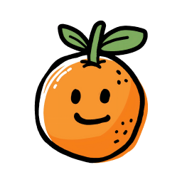

一个界面，双 Agent — Claude Code 与 Codex CLI 开箱即用
已有 API Key？手动填写密钥与 Base URL。
登录 4Router 账号，自动同步 API 配置。
Anthropic 的 AI 编程助手
OpenAI 的命令行编程代理
Claude Code 与 Codex CLI 已就绪
加载中...
检测到远程推荐配置有更新，以下是变动项：
开启后，可在手机或其他电脑的浏览器中实时操作本机的全部终端与 Agent 会话，所有会话在设备间保持同步。
允许后该设备将获得与本机相同的操作权限，包括终端与 Agent 的完整执行能力。若不是你本人发起，请拒绝。